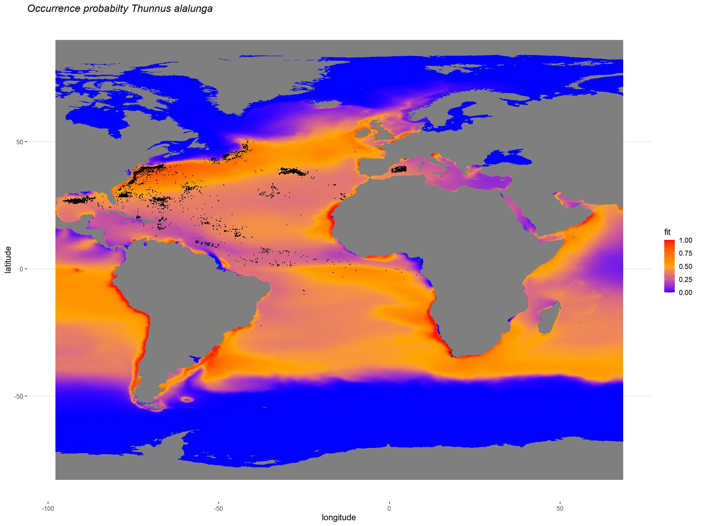

Chapter 7 Prediction and maps
In this chapter we predict from the fitted model and produce final SDMs maps.
First, we load a list of required libraries.
requiredPackages <- c(
#GENERAL USE LIBRARIES --------#
"here", # Library for reproducible workflow
"rstudioapi", # Library for reproducible workflow
"ggplot2", #for plotting
"tidyverse",
# "rgdal", # to work with Spatial data
"raster", #spatial
"maps", #world map
# "maptools", #plotting world map
"RColorBrewer", #color palette
"scam", #sdm models under the ecological niche theory framework
"ggpubr"
)We run a function to install the required packages that are not in our system and load all the required packages.
install_load_function <- function(pkg){
new.pkg <- pkg[!(pkg %in% installed.packages()[, "Package"])]
if (length(new.pkg))
install.packages(new.pkg, dependencies = TRUE)
sapply(pkg, require, character.only = TRUE)
}
install_load_function(requiredPackages)## here rstudioapi ggplot2 tidyverse raster maps
## TRUE TRUE TRUE TRUE TRUE TRUE
## RColorBrewer scam ggpubr
## TRUE TRUE TRUEWe define some overall settings.
# General settings for ggplot (black-white background, larger base_size)
theme_set(theme_bw(base_size = 16))7.1 Prepare environmental data
In previous steps (see Chapter 2), we have defined the study area that defines the extent of our spatial data. We load the study_area object that is a SpatialPolygonsDataFrame class:
And we load the rasterStack with the downloaded environmental data.
We transform the environmental data set first into a data frame, and then into a SpatialDataFrame.
## x y mylayers_1 mylayers_2
## Min. :-97.79 Min. :-82.96 Min. :0.0 Min. : 0.1
## 1st Qu.:-56.23 1st Qu.:-39.73 1st Qu.:0.1 1st Qu.:33.8
## Median :-14.67 Median : 3.50 Median :0.3 Median :34.6
## Mean :-14.67 Mean : 3.50 Mean :0.3 Mean :34.4
## 3rd Qu.: 26.90 3rd Qu.: 46.73 3rd Qu.:0.4 3rd Qu.:35.6
## Max. : 68.46 Max. : 89.96 Max. :3.6 Max. :40.7
## NA's :1501044 NA's :1501044
## mylayers_3 mylayers_4
## Min. :0.0 Min. :-1.8
## 1st Qu.:0.0 1st Qu.: 1.9
## Median :0.0 Median :15.1
## Mean :0.1 Mean :13.7
## 3rd Qu.:0.1 3rd Qu.:24.1
## Max. :1.0 Max. :32.3
## NA's :1652879 NA's :16528797.3 Mapping
# Load PA data
load(here::here ("data", "outputs_for_modelling", "PAdata_with_env.Rdata"))
proj_map <-ggplot()+
geom_raster(data=subset(env_dataframe),
aes(x,y,fill=fit)) +
scale_fill_gradient2(low="blue",
mid="orange",
high="red",
midpoint = 0.5,
limits = c(0,1)) +
ggtitle("Occurrence probabilty Thunnus alalunga")+
geom_point(data=subset(data,occurrenceStatus==1),
aes(LON,LAT),
col=1,
size=0.3) +
theme_pubclean(base_size = 14)+
theme(panel.background = element_blank(),
plot.title = element_text(face = "italic"),
#text = element_text(size = 14),
axis.text.x = element_text(size = 10),
axis.text.y = element_text(size = 10),
legend.position="right") +
labs(y="latitude", x = "longitude")
print(proj_map)
We finally save the projection map.